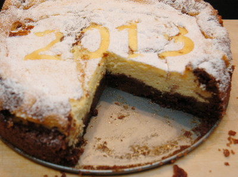

| Zutaten: | |
| Mürbeteig für Boden und Streusel: | |
| 125 g | weiche Butter |
| 120 g | Zucker |
| 1 Päckchen | Vanillezucker |
| 1 | Ei-Gelb (Eiweiss aufheben) |
| 200 g | Mehl |
| 2-3 EL | Back-Kakao |
| 1/2 Päckchen | Backpulver |
| Füllung: | |
| 125 g | weiche Butter |
| 200 g | Zucker |
| 6 | Ei-Gelb (Eiweiss aufheben) |
| 500g | Magerquark (Rahmquark geht auch....) |
| 1 Päckchen | Vanillepudding |
| 7 | Ei-Weiss |
Mürbeteig für Boden und Streusel:
Aus den Zutaten in der oben angegebenen Reihenfolge (also zuerst Butter, dann Zucker usw.) einen Mürbeteig herstellen. 3/4 des Teiges in die gefettete Springform geben und als Boden fest drücken, Springform zum Ruhen in den Kühlschrank stellen,den Rest des Teiges zur Seite stellen, den braucht man später, um oben auf dem Kuchen diese typischen „Zupfen“ zu machen. (Siehe meine Kommentar: Am besten gleich alles verbauen.)
Füllung:
Die 7 Eiweisse zu einem festen Eischnee schlagen und diesen erstmal im Kühlschrank zwischenlagern.
In der oben angegebenen Reihenfolge die Quarkfüllung herstellen und zuletzt das Eiweiss vorsichtig unterheben, diese Quarkmasse dann auf den gekühlten Boden geben.
Zuletzt aus dem Rest Mürbeteig sogenannte Zupfen formen (so eine Art Streuselklumpen) und auf der Quarkoberfläche verteilen. Man kann auch aus dem Mürbeteig mit Plätzchenausstechern Figuren oder Formen ausstechen (z.B. Herzen oder Blumen oder Jahreszahlen) und diese dann dekorativ auf den Kuchen legen. Man kann es auch einfach bleiben lassen und den gesamten Mürbeteig als Boden verwenden...
Dann backen bei 180°C - 30 Minuten
Dann vorsichtig raus aus dem Backofen und einfach in der Küche stehen lassen - 10 Minuten
Dann zu Ende backen bei 180°C - 30 Minuten
Im Ofen auskühlen lassen, d.h. Backofentür einen Spalt breit offen, am besten einen Holzkochlöffel in die Tür klemmen.
Ich backe den Kuchen immer am Vortag, stelle ihn dann über Nacht in den Keller oder Kühlschrank und bestreue ihn vor dem Servieren mit Puderzucker.
Beate K. aus Bayern
Der Kuchen war bei Beate so unwiderstehlich gut, dass wir gleich das Rezept anfordern mussten. Es gelang mir auf anhieb auch gar nicht so schlecht. Mir scheint aber die "Zupfen" etwas für Fortgeschrittene.... Meine sanken einfach ab. Lohnenswerter scheint es mir daher den Mürbeteig besser zu platzieren. In der Mitte dünn damit das nachher nicht so "pflatschig" wird. Am Rand wo die Hitze besser hinkommt etwas mehr und höher hinauf da der Teig dort gut ausbäckt. Das herausnehmen zwischendurch soll das Zusammenfallen verhindern. RE, Oktober 2013
@LINKBACK_TAG@ @WAKELOCK@